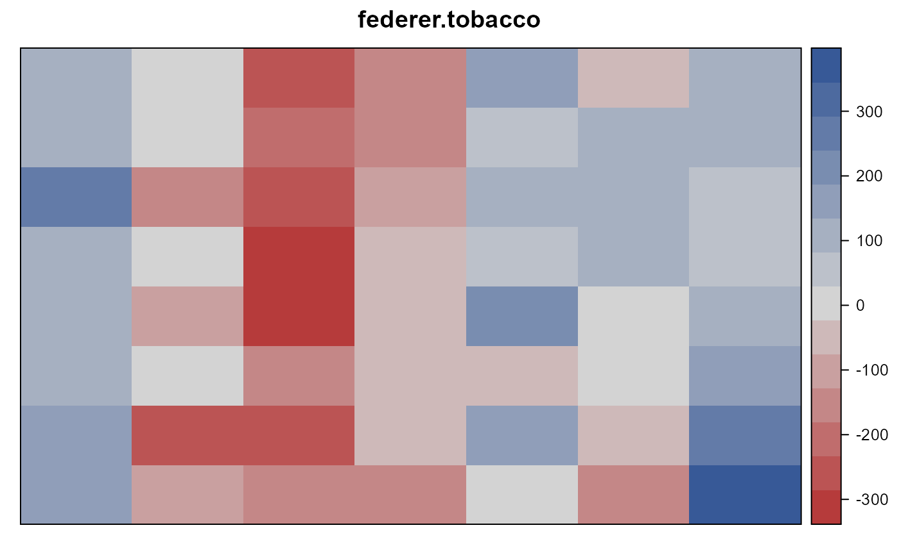

federer.tobacco.RdRCB of tobacco, height plants exposed to radiation
A data frame with 56 observations on the following 4 variables.
rowrow
blockblock, numeric
doseradiation dose, roentgens
heightheight of 20 plants, cm
An experiment conducted in 1951 and described in Federer (1954). The treatment involved exposing tobacco seeds to seven different doses of radiation. The seedlings were transplanted to the field in an RCB experiment with 7 treatments in 8 blocks. The physical layout of the experiment was in 8 rows and 7 columns.
Shortly after the plants were transplanted to the field it became apparent that an environmental gradient existed. The response variable was the total height (centimeters) of 20 plants.
Walter T Federer and C S Schlottfeldt, 1954. The use of covariance to control gradients in experiments. Biometrics, 10, 282--290. http://doi.org/10.2307/3001881
R. D. Cook and S. Weisberg (1999). Applied Regression Including Computing and Graphics.
Walter T Federer and Russell D Wolfinger, 2003. PROC GLM and PROC MIXED Codes for Trend Analyses for Row-Column Designed Experiments, Handbook of Formulas and Software for Plant Geneticists and Breeders, Haworth Press.
Paul N Hinz, (1987). Nearest-Neighbor Analysis in Practice, Iowa State Journal of Research, 62, 199--217. https://lib.dr.iastate.edu/iowastatejournalofresearch/vol62/iss2/1
# \dontrun{ library(agridat) data(federer.tobacco) dat <- federer.tobacco # RCB analysis. Treatment factor not signficant. dat <- transform(dat, dosef=factor(dose), rowf=factor(row), blockf=factor(block)) m1 <- lm(height ~ blockf + dosef, data=dat) anova(m1)#> Analysis of Variance Table #> #> Response: height #> Df Sum Sq Mean Sq F value Pr(>F) #> blockf 7 388315 55474 1.8352 0.1056 #> dosef 6 273875 45646 1.5100 0.1985 #> Residuals 42 1269586 30228# RCB residuals show strong spatial trends libs(desplot) dat$resid <- resid(m1) desplot(dat, resid ~ row * block, # aspect unknown main="federer.tobacco")# Row-column analysis. Treatment now significant m2 <- lm(height ~ rowf + blockf + dosef, data=dat) anova(m2)#> Analysis of Variance Table #> #> Response: height #> Df Sum Sq Mean Sq F value Pr(>F) #> rowf 6 1159072 193179 26.2763 9.065e-12 *** #> blockf 7 388315 55474 7.5455 1.355e-05 *** #> dosef 6 119724 19954 2.7141 0.02806 * #> Residuals 36 264666 7352 #> --- #> Signif. codes: 0 '***' 0.001 '**' 0.01 '*' 0.05 '.' 0.1 ' ' 1# }